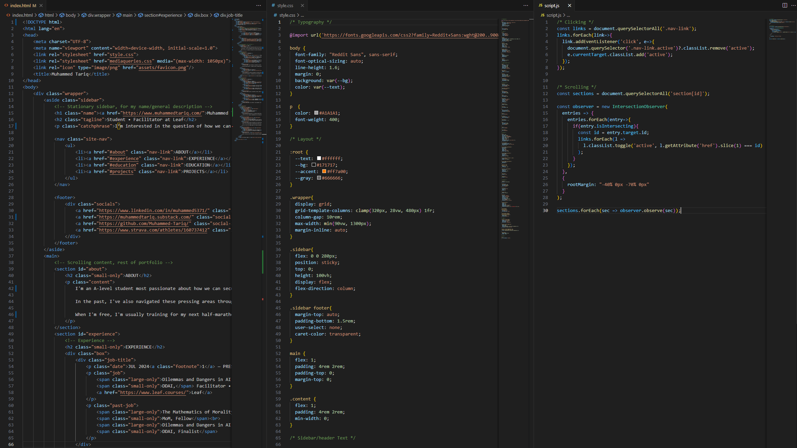
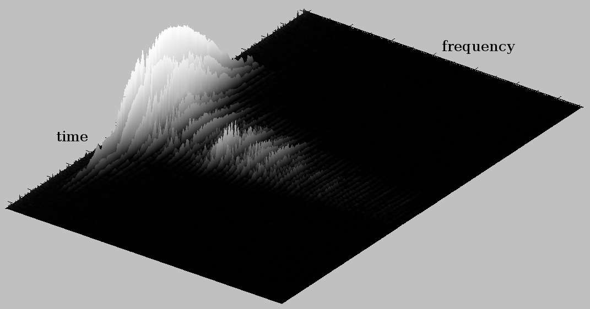
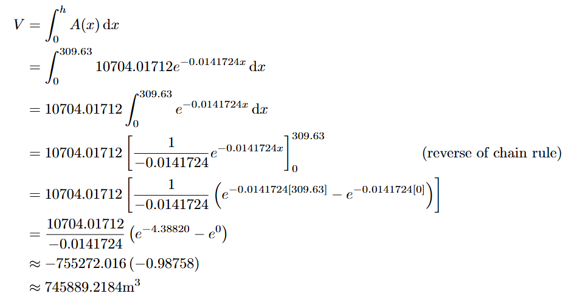

ABOUT
I'm an upcoming gap year student most passionate about how we can secure a positive long-term future for humanity. Most critical is ensuring that the emergence of potentially smarter-than-human AI systems occurs safely, minimising the risk of global catastrophe. Currently, I help others realise their potential for high impact, and their agency, through my work in Leaf's fellowship programmes, which aims to increase the amount of talented, thoughtful, and creative people working in various key cause areas.
In the past, I've navigated these pressing areas by participating in the Non-Trivial Fellowship, where I won a £500 scholarship for a project surrounding field-building within the field of AI safety. I've also done some interesting things over the years, such as conducting a psychological experiment on my school to assess the impact of instrumentation of musical tastes, participating in the UKMT NMSS '2024 and ESPR '2025, and racing five half-marathons.
When I'm free nowadays, you might find me travelling, returning to running, sidequesting, writing a blog post, listening to an unhealthy amount of dancefloor drum-and-bass, playing osu!, mastering graphic design, or creating some sea-lantern-infested Minecraft skyscrapers!
EXPERIENCE
JUL 2024 — PRESENT
Facilitator • Leaf
I've facilitated for Leaf since the summer of 2024, where I started with "Dilemmas and Dangers in AI". Participants I led stated that I "did an exceptionally great job in introducing controversial counter-arguments for us to consider and discuss", and 80% of them felt that I exceeded their expectations. Covering Bayes' Theorem, scope insensitivity, Fermi problems, quantifying welfare, and how participants can tie it all into what they're good and what they love.
In subsequent cohorts, above 80% of participants felt that I exceeded their expectations (with 100% feeling that I at least met them), and most described that I was "much better than they expected" or that I "blew their expectations out of the water".
I'm currently helping out facilitating The Mathematics of Morality with their Summer 2026 cohort.
MAY 2024 — AUG 2024
Fellow • Non-Trivial
This consisted of an 8-week fellowship on solving the world's most pressing problems, over which I created a project focusing on distilling information on the technical AI alignment landscape, and the potentially existential risks from AI as a whole, to a wider audience.
During the fellowship, I attended talks from pioneers such as philosopher Peter Singer and AI researcher Yoshua Bengio, and I had guidance on my project from experts at top universities, such as Oxford, Cambridge and Stanford. Following the completion of the project, I was given a £500 scholarship to continue doing meaningful and important work.
EDUCATION
SEP 2024 — JUN 2026
Surrey Maths School SuMS
(Maths, Further Maths, Physics, Comp Sci) (Maths, FM, Phys, CS)
A specialist maths school in Guildford, Surrey, where I formerly studied my A-levels full-time.
Awarded a Gold in the UKMT Senior Maths Challenge.
SEP 2019 — SEP 2024
Ernest Bevin Academy EBA
GCSEs: 999999999
(9 in English Language, 9 in Mathematics)
GCSEs: 999999999
(9 in Eng Lang, Maths)
The best GCSE grades in my school; I was awarded a full set of Grade 9s across every subject: English Language/Literature, Mathematics, Physics, Chemistry, Biology, Geography, Spanish, and Computer Science, placing me roughly within the top 0.01% of exam results in England.
Awarded a Gold (best in school) for the UKMT Intermediate Maths Challenge, nominating me for the UKMT National Mathematics Summer School.
PROJECTS

JUN 2025
Personal Website
muhammedtariq.com
By first creating a mock-up of this website on Photoshop and then procedurally going over and fulfilling each of the design areas I had in mind, I programmed and deployed this personal website entirely using HTML, CSS, and JS as a place to compile all the things I've done (this, indeed, becoming very meta). This website is fully open-source, and its code can be found here, or by using Inspect Element on this webpage.

OCT 2024 — JUN 2025
Surrey Maths School Project Qualification
Can a simple computer program predict musical preferences?
This group research project consisted of an initial psychological experiment conducted on our own school, which aimed to assess the extent to which instrumentation affected musical preferences using various statistical and sampling methods, such as the two-tailed t-test.
After it was (surprisingly!) determined that there was insufficient evidence supporting that instrumentation meaningfully effected musical preferences, we used it to inform the production of a simple computer program which used genre as a proxy to predict musical preferences, using dynamics and harmony. The program took a large, assorted set of songs of various genres, and another smaller list of songs of a genre we wanted to pick out. From there, the program would output the list of assorted songs in order of how closely they match the songs we want to pick out.
Out of a list of 16 random songs (5 of which we wanted to pick out), the program successfully ranked 4 of the songs we wanted to pick out within the top 5 rankings.

APR 2025
Tom Rocks Maths Essay Competition
Mathematics on the Back of a Napkin
Being placed on the winner's shortlist, my submission for this essay competition was on "back-of-the-envelope", or in this case, "napkin", calculations; i.e. Fermi problems. This (mainly fun) read begins with an estimation as to how many tennis balls fit within the Eiffel Tower, using techniques such as exponential interpolation to estimate the mathematical equation to which the tower's curve matches and knowledge of sphere packing, before then estimating how long it would take to find an atom hidden randomly in the universe, and then using the binomial formula to model the infinite monkey theorem given that, just like us, they are also allowed to make mistakes.
After a brief dive into some smaller estimation problems, the essay ends with a poignant calculation on how much the average relationship (and breakup) weighs, and then ways in which Fermi estimations are really used in real life.
Entirely coded in Visual Studio Code using HTML, CSS and JS, and deployed with Vercel. All text is set in the Reddit Sans typeface. This website is fully open-source.
Last updated June 2026.